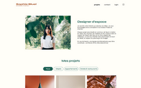
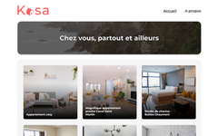

Il était une fois...
Une développeuse web full-stack à la recherche d’une alternance
Déterminée à développer ses compétences...
Elle s’attela à acquérir les connaissances numériques nécessaires pour décrocher l’emploi de ses rêves.
Compétences back-end
NodeJS
JavaScript
Express
API Rest
Compétences développement
VS Code
GitHub
SEO
Accessibilité
Son portfolio commença à se remplir...
Et elle partagea plusieurs projets témoignant de toute la passion et la rigueur qu’elle investissait dans son travail.
Portfolio d'architecte
Synopsis
Site web dynamique avec JavaScript : authentification, opérations CRUD, formulaire et modale
Challenges
Gestion d'une modale d'édition de galerie accessible uniquement pour un utilisateur authentifié. Ajout et suppression dynamiques d'une image simultanément dans la galerie et la modale.
Application immobilière
Synopsis
Application React responsive avec Node.js et Vite, stylage en CSS avec Sass
Challenges
Apprentissage du JSX et utilisation optimale des props pour transmettre des données entre composants. Utilisation de hooks, notamment pour la mise en place d'animations CSS.
Site de notation de livres
Synopsis
Création d’API Rest sécurisée avec serveur Express et database NoSQL (MongoDB), Green Code"
Challenges
Vérification et optimisation des images uploadées selon le Green Code. Mise en place de mesures de sécurité : secrets dans les variables d'environnement, schéma et encryptage des mots de passe, limitation du nombre de requêtes à l'API.
Elle était fière de sa reconversion...
Car elle était malentendante et avait dû faire preuve d’une grande résilience pour (re)construire son projet professionnel.
Parcours professionnel
2025
RNCP Développeur informatique niveau 5 (Open Classrooms)
2020
Productrice et correctrice de contenus chez Ludogram (Tourcoing)
2019
Correctrice en freelance
2018
- Master en Éditions numériques et imprimées de textes littéraires (Lille)
- Stage : assistante éditoriale chez Adrénalivre (Tourcoing)
2016
Licence de Lettres Modernes (Toulouse)
Parcours personnel
Organisée et autonome, j'aime appliquer mes capacités d'analyse et de logique à la résolution de problèmes
Je recherche la progression, le dépassement de soi et la persévérance, que j'applique en pratiquant l'escalade
Je m'intègre dans des communautés partageant mes valeurs : je suis bénévole à la SPA
Je maîtrise l'anglais, que je pratique en regardant des séries ou en lisant des livres anglophones en V.O.
J'allie rigueur et précision à la créativité, notamment avec ma passion pour les activités manuelles comme le tricot
J'ai développé ma gestion du stress et ma réactivité via du contenu de haut niveau sur World of Warcraft
Elle resta à l’écoute d'opportunités...
Et continua à développer ses compétences via des projets personnels en attendant de trouver une alternance en développement web full-stack autour de Lille.